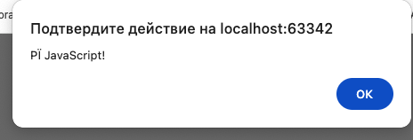

тут должен быть текст обычно, а не в хеад
скрипт вставляем через тег script. можно указать ссылку на скрипт, в первом теге указать scr="***", там может быть абсолютный путь/ относительный путь от папки где html / ссылка на ресурс. если указана ссылка, тело скрипта игнорируется!
Как правило, только простейшие скрипты помещаются в HTML. Более сложные выделяются в отдельные файлы. Польза отдельных файлов в том, что браузер загрузит скрипт отдельно и сможет хранить его в кеше. Другие страницы, которые подключают тот же скрипт, смогут брать его из кеша вместо повторной загрузки из сети. И таким образом файл будет загружаться с сервера только один раз.
Столкнулся в первом задании с проблемой кодировки. 
юзаю вебшторм 2025. глянуть мой пример html
>
покопал - вебшторм сохраняет в utf 8, все ок, но браузер пытается прочитать в каком-то другом формате (как я понял). указал напрямую
<meta charset="UTF-8">
снизу справа вебшторм подсвечивает в каком формате хранит html
чтобы писать блоки кода и они не юзались браузером, используем тег pre - тег code - и далее в коде вместо < у открывающего тега пишем < , а вместо > для закрывающего тега используем > и на всякий есть двойное экранирование с помощью &